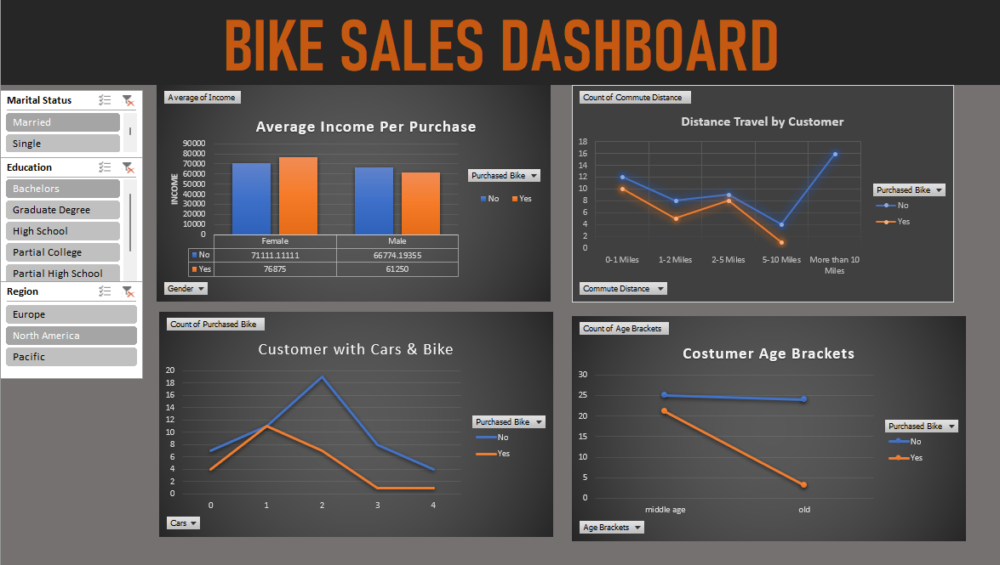

Interactive Excel dashboard built using Pivot Tables, Pivot Charts, Slicers, and KPI reporting to analyze customer purchasing behavior, sales trends, and demographic insights.
This Excel dashboard analyzes bike sales using customer demographics, income, commute distance, education, occupation, and purchasing behavior.
Understand who purchases bikes based on age, income, marital status, education, and occupation.
Analyze purchasing behavior using interactive slicers and Pivot Charts.
Allow business users to filter and explore sales information dynamically.
Below is the Bike Sales Dashboard created in Microsoft Excel.

Sales managers need to understand which customer groups are more likely to purchase bikes. Without visualization, identifying trends across demographics, income, and purchasing behavior becomes time consuming.
I designed an interactive Excel dashboard that transforms raw sales data into meaningful visual insights using Pivot Tables, Pivot Charts, Slicers, and dynamic calculations. Users can filter the dashboard by customer characteristics and quickly identify sales trends.
The dashboard enables business users to identify profitable customer segments, improve marketing decisions, analyze purchasing behavior, and support data driven sales strategies through interactive reporting.
Key business questions answered by this dashboard.
Identify customer groups that are most likely to purchase bicycles.
Compare purchasing patterns across different income levels.
Explore customer behavior through interactive Excel slicers and charts.
I build Excel dashboards, Power BI reports, SQL reporting solutions, Looker Studio dashboards, and AI automation workflows that transform raw data into business insights.